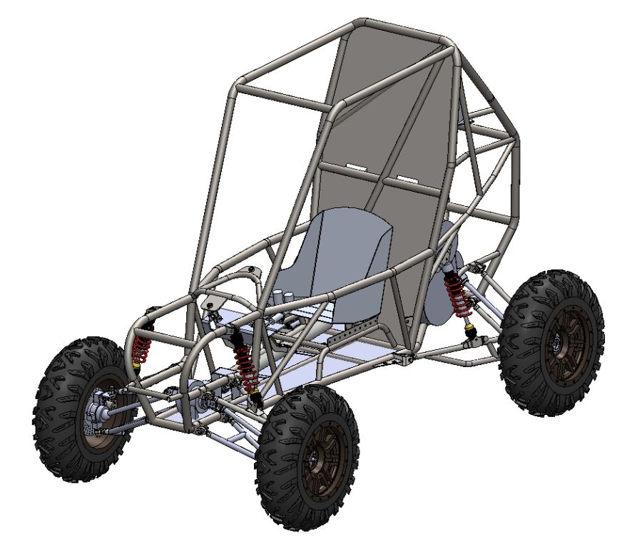
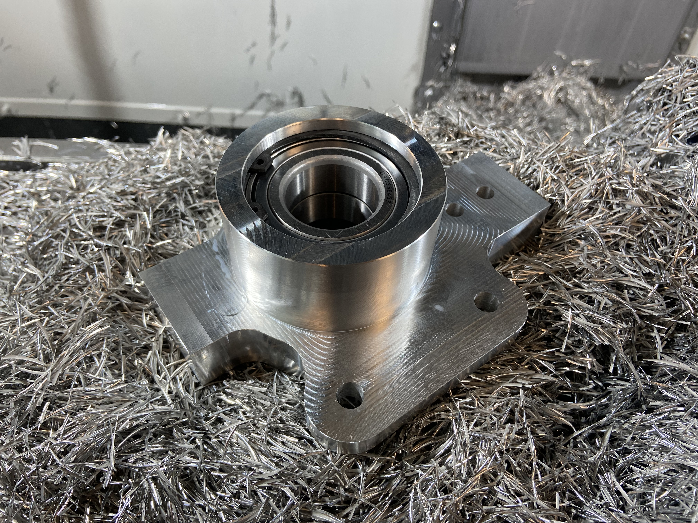
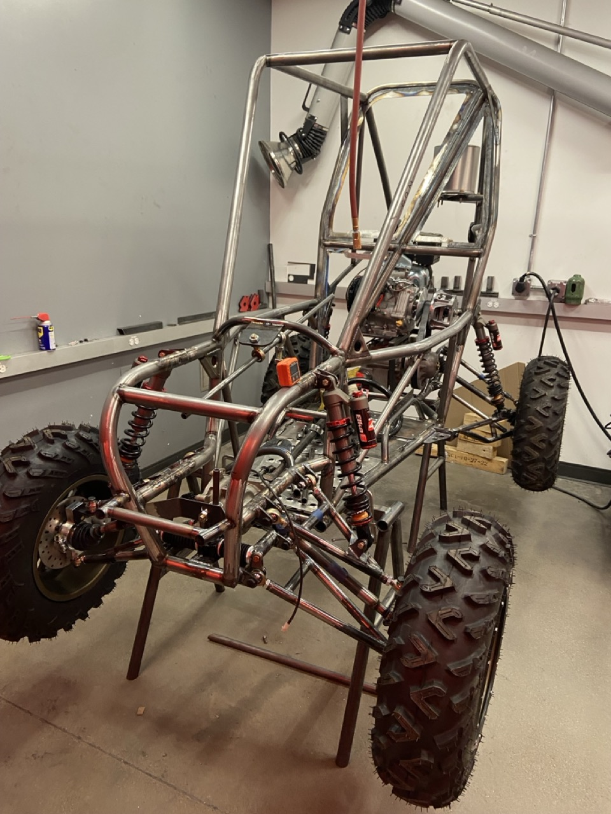
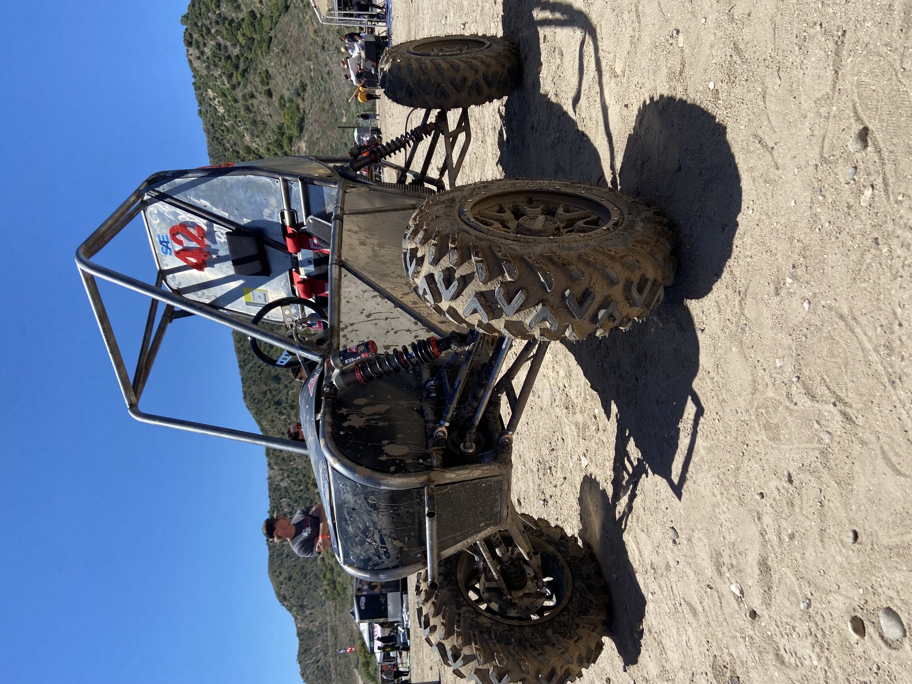

A senior capstone project designing and building Western Colorado University's first ever SAE Baja competition vehicle then racing it at SAE Baja competition in Gorman, CA.
SAE Baja vehicles are judged on a strict rulebook covering everything from roll cage geometry to fastener grades, and every subsystem (suspension, drivetrain, chassis, steering) must work together under a fixed budget and a hard competition deadline. This was WCU's first year fielding a car, so the team wasn't refining a proven design; it was building the baseline vehicle from an inherited, partially welded frame while training an entirely new club to compete.


Left: vehicle CAD model in Solidworks. Right: vehicle hub carrier cnc machining.
As team captain, the job was keeping every subsystem's decisions compatible with everyone else's. While leading general project management and task organization I also took ownership of the full assembly CAD model, TIG welding of secondary chassis members/suspension, and the design/machining of the hub carriers on all four corners of the vehicle.
| CAD & Team Captain | Directed CAD assembly and organization across the team's subsystem contributors, and led overall project management for both the senior capstone deliverables and SAE's competition deliverables. |
| Hub Carriers | Designed and machined custom aluminum hub carriers for all four corners after the team dropped portal axles to cut complexity, failure risk, and scope creep that would push us past our completion date. |
| CONSTRAINT | Every decision was checked against the SAE rulebook and a fixed budget; the team's biggest lesson was that suspension geometry should drive frame design, not the other way around, since the inherited frame wasn't built around the suspension it ended up needing. |


Left: chassis fabrication in progress. Right: the finished vehicle at competition.
Delivered a competition vehicle that passed technical inspection and competed in the endurance race and hill climb at Baja SAE California, marking the first time WCU had ever fielded a team at an SAE Baja event. Due to the vehicle's excess weight and numerous power transmission losses, our endurance race ended early despite not having any breakages.
Full reports and presentation materials: the Final Design Review Report, the SAE Baja Competition Design Review Briefing, and the poster presented at Industry Night.